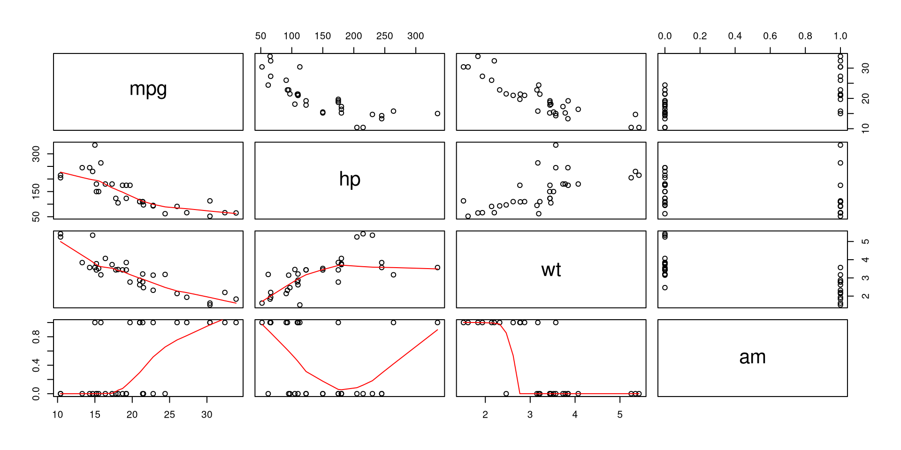
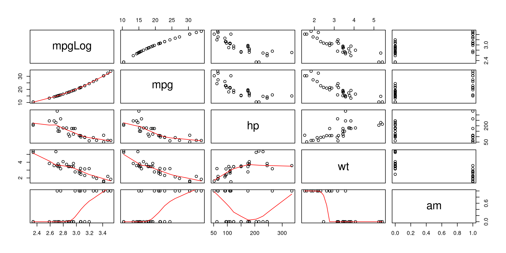
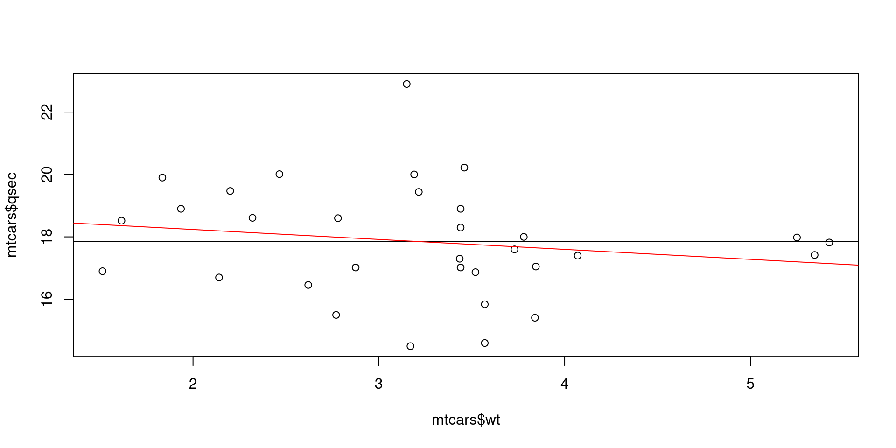
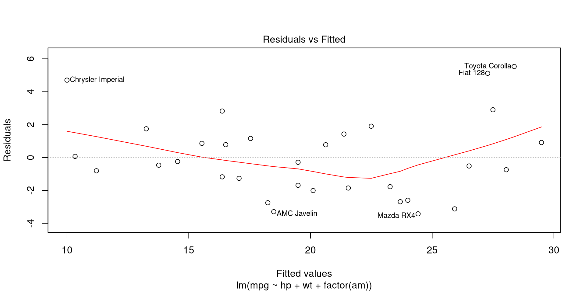
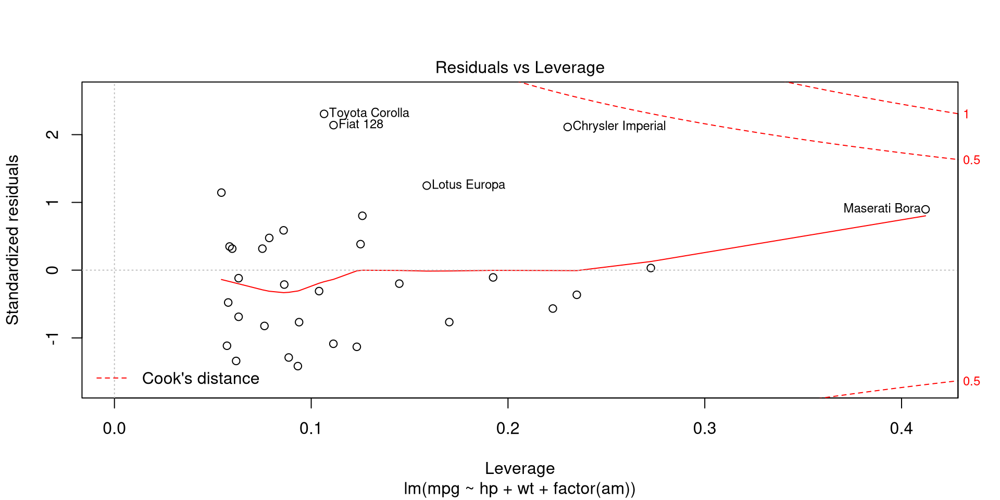
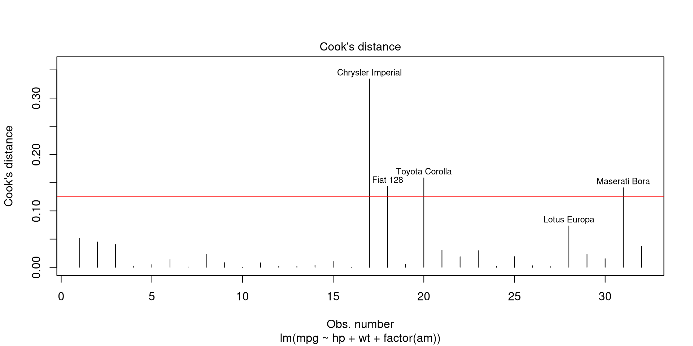
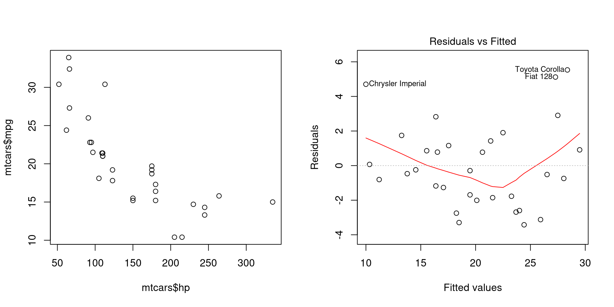

Chapter 10 Ordinary least squares regression
The requirements for a BLUE (best linear unbiased estimator) will be outlined.
Dependent variables will be referred to as response and independent variable(s) as predictor(s).
We’ll be using the pipe operator for better readability so let’s first load the magrittr package.
The mtcars dataset in base R is suitable for an example. To begin with, it’s a good idea to plot the relationships between variables of interest together with a LOWESS smoothed line.

The relationships between variables are cleary present. Theoretically, we can expcet that horsepower (hp), weight (wt) and transmission (am, automatic (0) or manual (1)) influence fuel consumption (mpg). So let’s model this relationship.
##
## Call:
## lm(formula = mpg ~ hp + wt + factor(am), data = mtcars)
##
## Coefficients:
## (Intercept) hp wt factor(am)1
## 34.00288 -0.03748 -2.87858 2.08371The resulting coefficients represent model parameters. We can also get 95% confidence intervals for these coefficients.
## 2.5 % 97.5 %
## (Intercept) 28.58963286 39.41611738
## hp -0.05715454 -0.01780291
## wt -4.73232353 -1.02482730
## factor(am)1 -0.73575874 4.90317900A summary call of the model provides a lot of information that will be further explained.
##
## Call:
## lm(formula = mpg ~ hp + wt + factor(am), data = mtcars)
##
## Residuals:
## Min 1Q Median 3Q Max
## -3.4221 -1.7924 -0.3788 1.2249 5.5317
##
## Coefficients:
## Estimate Std. Error t value Pr(>|t|)
## (Intercept) 34.002875 2.642659 12.867 2.82e-13 ***
## hp -0.037479 0.009605 -3.902 0.000546 ***
## wt -2.878575 0.904971 -3.181 0.003574 **
## factor(am)1 2.083710 1.376420 1.514 0.141268
## ---
## Signif. codes: 0 '***' 0.001 '**' 0.01 '*' 0.05 '.' 0.1 ' ' 1
##
## Residual standard error: 2.538 on 28 degrees of freedom
## Multiple R-squared: 0.8399, Adjusted R-squared: 0.8227
## F-statistic: 48.96 on 3 and 28 DF, p-value: 2.908e-1110.1 Model explains the data well
A model does not always have to explain the variation of response but in often this is useful, e.g. when comparing models. For linear least squares models goodness of fit can be measured by the coefficient of determination (\(R^{2}\)). Because it indicates the part of variation that is explained by the model, it can be represented by three measures:
- the sum of the squares of differences of each observed value and the mean value of response (total sum of squares, \(TSS\)), i.e. \(\sum_{i = 1}^{n} (y_{i} - \overline{y}_{i})^2\)
- the sum of the squares of differences of the predicted values and the mean value of response (explained sum of squares, \(ESS\)), i.e. \(\sum_{i = 1}^{n} (\hat{y}_{i} - \overline{y})^2\)
- the sum of the squares of differences of the predicted values and observed values (residual sum of squares, \(RSS\)), i.e. \(\sum_{i = 1}^{n} (y_{i} - \hat{y}_{i})^2\).
The \(R^{2}\) is represented by these measures as follows:
\[R^{2} = \frac{ESS}{TSS} = 1 - \frac{RSS}{TSS}\]
To penalize a model for the number of predictors (\(K\)) while considering the number of observations (\(N\)), the adjusted \(R^{2}\) can also be used, particularly for model comparison:
\[\overline{R^{2}} = 1 - \frac{RSS/(N-K)}{TSS/(N-K)}\]
In our model, the values of \(R^{2}\) and \(\overline{R^{2}}\) show that our model fits data very well and the predictors describe large part of the variation of the response:
## [1] 0.8398903## [1] 0.822735710.2 Functional form of the model is correct
The pairs plot seems to suggest a non-linear relationship between some variables. Thus, there is reason to expect that the transformation of observed values may result in a model with better fit. We can estimate the correctness of a model specification with a RESET test. This involves testing whether or not the coefficients of exponentiated predicted response values (e.g. \(\hat{y}^2\)) are zero or not when included in the initial model.
## Analysis of Variance Table
##
## Model 1: mpg ~ hp + wt + factor(am)
## Model 2: mpg ~ hp + wt + factor(am) + I(mpgMod$fitted^2) + I(mpgMod$fitted^3)
## Res.Df RSS Df Sum of Sq F Pr(>F)
## 1 28 180.29
## 2 26 126.79 2 53.502 5.4857 0.01029 *
## ---
## Signif. codes: 0 '***' 0.001 '**' 0.01 '*' 0.05 '.' 0.1 ' ' 1H0: Functional form of the model is correct
H1: Functional form of the model is not correct
A \(p\) value of F-test lower than a a critical value (\(\alpha = 0.05\)) suggests that the model is incorrectly specified.
10.2.1 Log-linear or log-log relationship
Model fit might be improved by using logged values of the response or predictor variables. For example, we can compare logged and not logged values of fuel consumption (mpg) in their relationship with other variables.
list(mpgLog = log(mtcars$mpg),
mtcars[, c('mpg', 'hp', 'wt', 'am')]) %>%
pairs(lower.panel = panel.smooth)
Logged fuel consumption (mpg) does seem to be more linearly related to weight (wt) than not logged values, so we can try to estimate a model with logged response variable.
##
## Call:
## lm(formula = I(log(mpg)) ~ hp + wt + factor(am), data = mtcars)
##
## Residuals:
## Min 1Q Median 3Q Max
## -0.17137 -0.06955 -0.03865 0.07218 0.26567
##
## Coefficients:
## Estimate Std. Error t value Pr(>|t|)
## (Intercept) 3.7491397 0.1165798 32.159 < 2e-16 ***
## hp -0.0016850 0.0004237 -3.976 0.000448 ***
## wt -0.1757558 0.0399224 -4.402 0.000142 ***
## factor(am)1 0.0516749 0.0607202 0.851 0.401970
## ---
## Signif. codes: 0 '***' 0.001 '**' 0.01 '*' 0.05 '.' 0.1 ' ' 1
##
## Residual standard error: 0.1119 on 28 degrees of freedom
## Multiple R-squared: 0.8724, Adjusted R-squared: 0.8587
## F-statistic: 63.79 on 3 and 28 DF, p-value: 1.24e-12Here we can’t use anova to test or \(R^{2}\) to estimate the improvement of model specification as the variances of response variables are different. It’s important to note that in log-linear and log-log models the coefficients represent elasticities, i.e. not absolute values but per cent changes in values of response (log-linear) or both, predictors and response (log-log).
10.2.2 Polynomials
Another way to obtain a better model fit is by using polynomials. Commonly, exponentiated values of predictors are used. For example, we can add the exponents of 2 of horsepower (hp) and weight (wt) to the model and test the result.
## Analysis of Variance Table
##
## Model 1: mpg ~ hp + wt + factor(am)
## Model 2: mpg ~ hp + I(hp^2) + wt + I(wt^2) + factor(am)
## Res.Df RSS Df Sum of Sq F Pr(>F)
## 1 28 180.29
## 2 26 122.86 2 57.436 6.0776 0.00683 **
## ---
## Signif. codes: 0 '***' 0.001 '**' 0.01 '*' 0.05 '.' 0.1 ' ' 1H0: Model with polynomials does not have lower residual sum of squares
H1: Model with polynomials does have lower residual sum of squares
Here, a statistically significant difference at \(\alpha = 0.05\) suggests a better fit with exponentiated values.
10.3 Model parameters are statistically significant
Determining that the parameters in the model are statistically significant allows us to interpret the values of coefficients and to a certain extent makes sure that they represent more than just random noise in the data.
10.3.1 Individual significance of parameters (t-test)
To test the significane of the parameters separately we can use t-test. For each coefficient, we can calculate the value of the t-statistic using estimated value and corresponding standard errors and then estimate the probability of the aquired t value. The lm function does all this for us:
## Estimate Std. Error t value Pr(>|t|)
## (Intercept) 34.00287512 2.642659337 12.866916 2.824030e-13
## hp -0.03747873 0.009605422 -3.901830 5.464023e-04
## wt -2.87857541 0.904970538 -3.180850 3.574031e-03
## factor(am)1 2.08371013 1.376420152 1.513862 1.412682e-01H0: The coefficient is zero, i.e. \(\beta = 0\)
H1: Thecoefficient is not zero, i.e. \(\beta \neq 0\)
In our case horsepower and weight have a statistically significant effect on fuel consumption while transmisson does not (\(\alpha = 0.05\)). It’s worth noting that a statistically insignificant parameter should not be excluded from a model when there is a valid causal relationship from a theoretical point of view.
10.3.2 Combined significance of parameters (f-test)
F-test can be used to compare models by comparing residual sums of squares. First, we can test if the model with parameters (full model) fits data better than a model with only the intercept (reduced model). Although this is also reported by summary.lm, we can use analysis of variance to test this explicitly:
## Analysis of Variance Table
##
## Model 1: mpg ~ hp + wt + factor(am)
## Model 2: mpg ~ 1
## Res.Df RSS Df Sum of Sq F Pr(>F)
## 1 28 180.29
## 2 31 1126.05 -3 -945.76 48.96 2.908e-11 ***
## ---
## Signif. codes: 0 '***' 0.001 '**' 0.01 '*' 0.05 '.' 0.1 ' ' 1H0: All coefficients are simultaineously zero
H1: At least one of the coefficients is not zero 0
In our model at least one of the coefficients is not zero. But we could, for example, also estimate the effect of weight of a car (wt) on it’s 1/4 mile time (qsec). In addition to an F-test, we can also visually confirm that the slope is not very different from zero.
# F-test
redMod <- lm(qsec ~ 1, mtcars) # Reduced model
fullMod <- lm(qsec ~ wt, mtcars) # Full model
anova(fullMod, redMod)## Analysis of Variance Table
##
## Model 1: qsec ~ wt
## Model 2: qsec ~ 1
## Res.Df RSS Df Sum of Sq F Pr(>F)
## 1 30 95.966
## 2 31 98.988 -1 -3.0217 0.9446 0.3389# Visual
plot(mtcars$wt, mtcars$qsec)
abline(redMod) # Reduced model
abline(fullMod, col = 'red') # Full model
A second use for the F-test is to compare nested models. We can test if the coefficients for horsepower (hp) and transmission (am) are simultaineously significantly different from zero.
## Analysis of Variance Table
##
## Model 1: mpg ~ hp + wt + factor(am)
## Model 2: mpg ~ wt
## Res.Df RSS Df Sum of Sq F Pr(>F)
## 1 28 180.29
## 2 30 278.32 -2 -98.031 7.6123 0.002291 **
## ---
## Signif. codes: 0 '***' 0.001 '**' 0.01 '*' 0.05 '.' 0.1 ' ' 1H0: All coefficients in full but not in reduced model are zero
H1: At least one of the coefficients in full but not in reduced model are not zero
Insignificant F-statistic shows that we can reject the null hypothesis that the coefficients of hp and factor(am) are simultaineously zero.
10.4 Model is not sensitive to individual observations
Even a small number of extreme observations can substantially alter model parameters in least squares estimation. Thus, it’s important to be aware of atypical observatons and deal with them.
10.4.1 Residuals
A simple approach is to take a look at residuals at different fitted values. Residuals can be visualized by calling the 1st plot of plot.lm function. The function accepts labels.id and id.n as argumets which respectively set the vector used for point labels and the number of labels to add (starting from extreme values). This allows to understand which observations represent
outliers in modelled relationship.

The observations with residuals that markedly diverge from 0 are outliers and may have a large influence on model parameters.
10.4.2 Leverage of observations
A more reliable method for detecting influential observations is to calculate leverage for each observation. Because predicted responses \(\hat{y}\) are equal to matrix \(H = X(X^{T}X)^{-1}X^{T}\) multiplied by observed responses \(y\), the value of \(h_{ii} = [H]_{ii}\) expresses the leverage of \(i\)th observation. That is, the leverage score \(h_{ii}\) represents the weight of \(i\)th observaton on predicted response \(\hat{y}_{i}\). Leverages (along with residuals) can be visualized by calling the 5th plot of plot.lm.

The value of leverage score \(h_{ii}\) is between 0 and 1, thus a leverage over 0.4 (Maserati Bora) is rather high.
10.4.3 Influence of observations (Cook’s distance)
Influence of obsevations can also be determined by calculating how much model parameters change if an observation is omitted. This is what Cook’s distance estimate \(D_{i}\) for observation \(i\) represents:
\[D_{i} = \frac{\sum_{j=i}^{n}(\hat{y}_{j} - \hat{y}_{j(i)})^2} {p s^{2}}\],
which, put plainly, is the sum of all differences in \(\hat{y}\) when observation \(i\) is omitted, divided by number of parameters \(p\) multiplied by mean squared error \(s^{2}\). Cook’s distance can be plotted by calling 4th plot of plot.lm. A Cook’s distance value that is higher than 4 divided by number of observations may be considered as influential, although there are less conservative suggestions for tresholds.

When following the suggestion of 4/N for treshold, there are 4 influential observations in our model.
10.5 Error term is independent and has constant variance
Serial correlation and non-constant variance of residuals imply that model standard errors and thus respective p-values for coefficients are incorrect. In order to interpret the model parameters it’s important to make sure that homoscedasticity nor autocorrelation are present and use corrected standard errors if otherwise.
10.5.1 Heteroscedasticity
Heteroscedasticity occurs when variance of error term for each observation might be different, i.e. is not constant, i.e. \(var(\varepsilon|X) \neq \sigma^{2}\). Heteroscedasticity is usually evident when variables are plotted against each other or when residuals are plotted at different values of response variables.

## null device
## 1We can notice the lower variance of fuel consumption (mpg) at higher values of horsepower (hp).
One way to assess heteroscedasticity is to test whether variance of residuals is dependent on values of the predictors. This procedure is called Breusch-Pagan test.
modBp <- lm(mpgMod$residuals^2 ~ hp + wt + factor(am), mtcars)
bpTest <- nobs(modBp) * summary(modBp)$r.squared # Test statistic
pchisq(bpTest, df = modBp$rank - 1, lower.tail = FALSE)## [1] 0.1366163An alternative is to use the bptest function from lmtest package.
##
## studentized Breusch-Pagan test
##
## data: mpgMod
## BP = 5.534, df = 3, p-value = 0.1366H0: Homoscedasticity
H1: Heteroscedasticity
A \(\chi^2\)-test indicates that variance of residuals is independent of values of the predictors (\(\alpha = 0.05\)) and we can assume homoscedasticity.
10.5.2 Autocorrelation
Autocorrelation occurs when error terms of different observations are correlated with each other, i.e. \(cov(\varepsilon_{i}\varepsilon_{j}|X) \neq 0, i \neq j\). Autocorrelatoin can be tested with Breusch-Godfrey test (bgtest) from lmtest package.
##
## Breusch-Godfrey test for serial correlation of order up to 1
##
## data: mpgMod
## LM test = 2.156, df = 1, p-value = 0.142H0: No autocorrelation
H1: Autocorrelation
A p-value of 0.142 indicates lack of autocorrelation in our model (\(\alpha = 0.05\)).
10.5.3 Robust standard errors
Suppose that we have a model where heteroscedasticity is present (wt ~ hp, adding horsepower makes cars heavier).
##
## Call:
## lm(formula = wt ~ hp, data = mtcars)
##
## Residuals:
## Min 1Q Median 3Q Max
## -1.41757 -0.53122 -0.02038 0.42536 1.56455
##
## Coefficients:
## Estimate Std. Error t value Pr(>|t|)
## (Intercept) 1.838247 0.316520 5.808 2.39e-06 ***
## hp 0.009401 0.001960 4.796 4.15e-05 ***
## ---
## Signif. codes: 0 '***' 0.001 '**' 0.01 '*' 0.05 '.' 0.1 ' ' 1
##
## Residual standard error: 0.7483 on 30 degrees of freedom
## Multiple R-squared: 0.4339, Adjusted R-squared: 0.4151
## F-statistic: 23 on 1 and 30 DF, p-value: 4.146e-05##
## studentized Breusch-Pagan test
##
## data: wtMod
## BP = 7.6716, df = 1, p-value = 0.00561We can expect that these standard errors are not reliable, so they need to be corrected. This involves calculating heteroscedasticity consistent (HC) standard errors. This can be done by plugging a defined symmetric diagonal matrix \(\Omega = diag(\omega_{1},...,\omega_{i})\) into coefficient covariance matrix and calculating standard errors from the result (Zeileis 20041). There are different estimators for \(\omega{i}\) but in most cases we can use \(\varepsilon^{2}_{i}\). Such covariance matrix with can be calculated with vcovHC function from sandwhich package setting HC0 as type. We can get the t- and p-values with HC standard errors with coeftest function from lmtest pacakge by inserting the new covariance matrix into initial model.
wtModVcov <- sandwich::vcovHC(wtMod, 'HC0') # Calculate covariance matrix
wtModVcov %>% diag %>% sqrt # Get robust standard errors## (Intercept) hp
## 0.339692165 0.002611827##
## t test of coefficients:
##
## Estimate Std. Error t value Pr(>|t|)
## (Intercept) 1.8382467 0.3396922 5.4115 7.288e-06 ***
## hp 0.0094010 0.0026118 3.5994 0.001133 **
## ---
## Signif. codes: 0 '***' 0.001 '**' 0.01 '*' 0.05 '.' 0.1 ' ' 1We can see that while the p-value for hp coefficient calculated with robust standard errors is still statistically significant (\(\alpha = 0.05\)), it’s much higher than before.
10.7 Predictors can not be linearly predicted from others (no multicollinearity)
When one predictor variable can be linearly predicted from others, the model parameters are sensitive to changes in model or data. We can evaluate multicollinearity by calculating a variance inflation factor (VIF) for each predictor. VIF expresses the variaton of a predictor that can be explained by other predictors in the model.
\[VIF_{i} = \frac{1}{1 - R^{2}_{i}}\]
Hence, it’s simple to caluculate manulally but we can also use the vif function from package car.
# Manually
for (i in attributes(mpgMod$terms)$term.labels) {
formula <- paste(i, "~",
paste(setdiff(attributes(mpgMod$terms)$term.labels, i), collapse = "+"))
model <- lm(formula, mtcars)
print(1/ (1 - summary(model)$r.squared))
}## [1] 2.088124
## [1] 3.774838
## [1] NA## hp wt factor(am)
## 2.088124 3.774838 2.271082The manual calculation did not yield a VIF value for factor(am) which should not be a problem since VIF is not very meaningful for nominal variables. A VIF value of >10 is usually considered as a sign of high multicollinearity.
10.8 TODO
- Explain log-linear etc. models